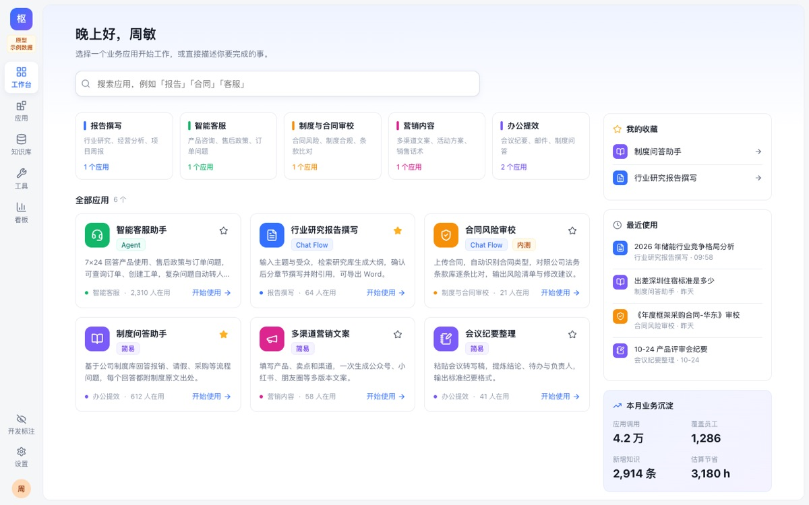
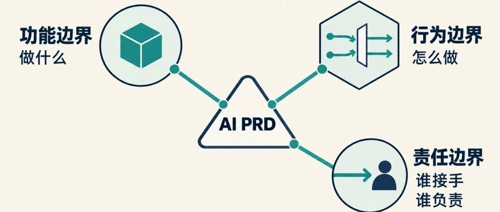
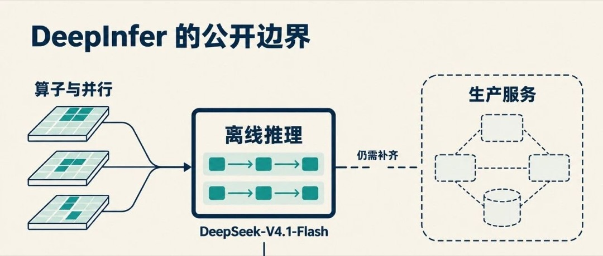

FDE：企业 AI 的装修工
FDE 火了，但这可能不是 AI 行业的好消息。
打开原文 ↗HELLO, I'M
把复杂的技术，变成简单的体验。
SELECTED WORK / 精选项目
04PROJECTS
PROJECT INDEX



AGENT SKILLS / 工具与技能
02SKILLS
取证与分层拆解一款 AI 产品（尤其 Agent / Multi-Agent）：定位、用户旅程、人机分工、模型成本、壁垒与架构，输出飞书 / Markdown / HTML 报告，单列「待核实」清单。
查看仓库 ↗AI 热点公众号写作：任务书 → 主张核对 → 初稿，区分“用户提供 / 已核实 / 小渡判断”，文末附主张—来源表，用懂行朋友聊天的口吻写。
查看仓库 ↗CAPABILITIES
文档解析 / OCR → 切块 → 向量召回 → Rerank → 流式生成 + 引用溯源
ReAct 留痕、专家—辩论—评审的多 Agent 链路、Skill 编写与部署
评测集设计、线上 Case 回流、Trace 可观测、Token 成本核算
需求定义、PRD 与降级策略、竞品与 AI 产品拆解、体验打磨
STACK
PythonFastAPILangChainCeleryPostgreSQL + pgvectorRedisDocker
TypeScriptVue 3ReactViteTailwind CSSthree.jsGLSLGSAP
OpenAI 兼容接口DeepSeek通义 qwen-vlGitHub ActionsGitHub PagesRender
WRITING / 公众号「小渡ovo」
03ARTICLES
FDE 火了，但这可能不是 AI 行业的好消息。
打开原文 ↗

更多文章：微信搜索公众号「小渡ovo」